| Standard | |||||
|
Standard cutters, sometimes called diagonal cutters, have heads with simple geometry: oval or taper. Oval designs are stronger; taper designs permit greater access. Standard cutters with full relief have lower profiles than cutters with semi-relief. 80% of all applications for precision hand cutting tools are best met with a standard cutter. |
|||||
| 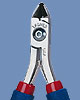 | 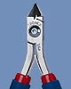 | 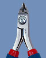 | |||
| Oval | Taper | Miniature Oval | Miniature Taper Relief | Large Oval | Extra Large Oval |
| Angulated | |||||
|
Most precision hand cutting tools have cutting edges at a 15 to 20 degree angle so that there is clearance for the operator's fingers on the handles. However a much greater angle may be desired when access to the object being cut is very limited or when the work area is very crowded. Tronex offers angulated cutters at different angles and with different cutting edge sizes to meet a wide variety of needs. |
|||||
| 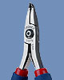 | 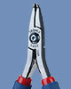 | 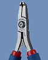 | 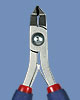 | 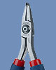 | 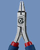 |
| Miniature 50º | Small 50º | Large 50º | Large 50º Pointed | Small 70º | Miniature 90º |
| Tip | |||
|
Tip cutters are cutting tools with long, narrow jaws that have small, exceptionally sharp edges for cutting at the very tip. All Tronex tip cutters have long jaws for extended reach. Some Tronex tip cutters have lower profiles or have ultra fine cutting tips. |
|||
| 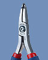 | 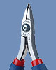 | 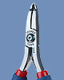 | |
| Miniature High Relief | Small | Sub Miniature | Rugged |
| Fine Hard Wire - Class W Cutters | |||
| 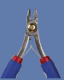 | 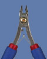 | 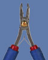 | 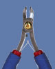 |
| Miniature Oval | Miniature Taper Relief | 50º Thin | 50º Wide |
| Fine Hard Wire - Class T Cutters | ||
| 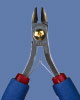 | 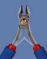 | 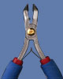 |
| Oval | Taper | 50º |
| Other Cutters | ||
| 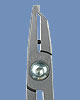 | 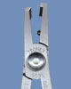 | 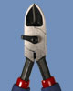 |
| 90º Standoff | 45º Standoff | Heavy Duty |
| Pliers | |||||
|
All Tronex plier models share two characteristics:
|
|||||
| 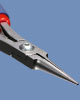 | 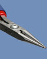 | ||||
| Chain Nose | Chain Nose Short Jaw | Needle Nose | Round Nose | Round Nose Short Jaw | Flat Nose |
| Bent Nose | |||||